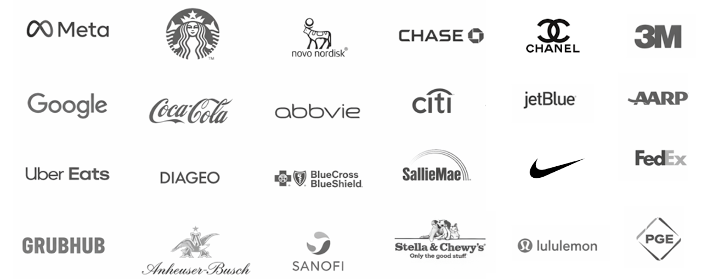

Ideas built on human insight and whitespace opportunity — framed for commercial traction
Behavioral truths decoded and framed for action, not just understanding
Differentiated brand positioning based on market need and human truths
Hi! I'm Amanda — a hybrid strategy leader who helps brands turn deep human insight into clear, actionable strategy.
I've worked across industries and around the world — leading strategy, insight, and innovation work for 60+ brands, from Series B startups to Fortune 100 giants. My clients span tech, CPG, finance, health, retail, and beyond. I've learned from the best at Deloitte, ?What If! (part of Accenture), Landor, Sylvain, COLLINS, Board of Innovation and now partner with ambitious teams ready to move.
I work at the intersection of research, creativity, and business — toggling between 10,000-foot vision and 10-inch detail. Whether I'm framing an insight, naming a product, or aligning a cross-functional team, my goal is always the same: to turn ambiguity into clarity, and insight into action.
Outside of work, I'm usually doing yoga, learning about somatic practices and polyvagal theory or baking my way through the NYT cookie list.

found in brooklyn